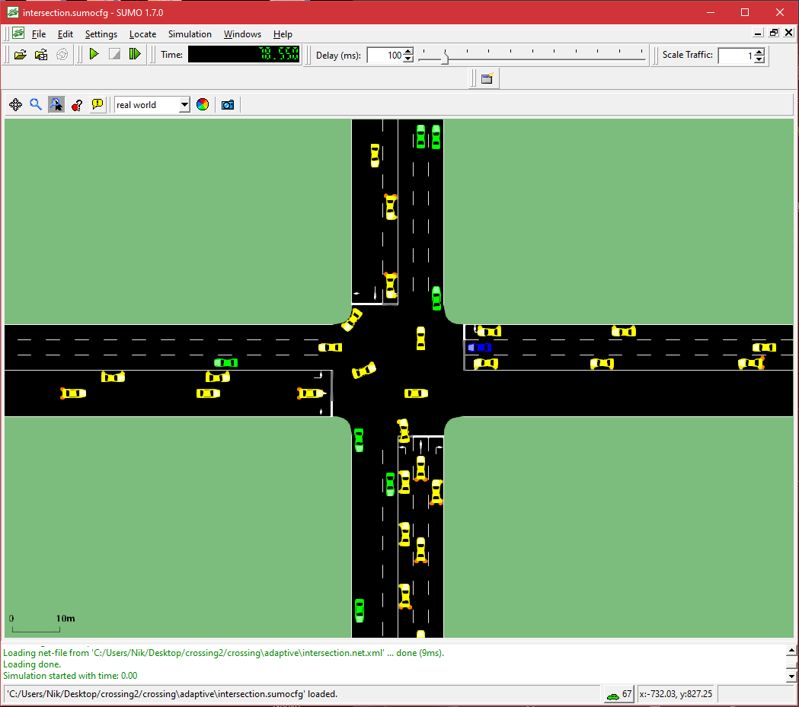

ACEC @ WETICE, 27/10/2021
An Adaptive Approach for the Coordination of Autonomous Vehicles at Intersections
Nicholas Glorio, Stefano Mariani, Giacomo Cabri, Franco Zambonelli
Università di Modena e Reggio Emilia
Motivation & Goal
- current research on self-driving mostly about individual vehicles
- but cooperative driving is necessary for collective vehicles in many situations
- e.g. crossing intersections
- hence we study intersection management
- compare state of art approaches
- propose adaptive approach
Intersection crossing: problem
- decision making process orchestrating vehicles' actions
- necessary to achieve own goal
- competitive access to shared resource
- poses 3 challenges
- safety: no collisions
- liveness: right of way for everyone
- quality: max./min. throughput/delay
Intersection crossing: solutions
- today: traffic light, precedence rules
- safe & inefficient
- efficient & unsafe
- tomorrow: thanks to V2I / V2V
- reservation
- negotiation (e.g. auction)
- others (e.g. DCOP, game-theoretic, self-org)
Selected approaches
- precedence-based right of way as baseline
- centralised reservation-based as "best in class"
- IM receives space-time reservations for intersection cells from approaching vehicles
- IM elaborates collision-free trajectories
- IM communicates back to vehicles their parameters for crossing (e.g. speed profile)
- decentralised competitive auction as state-of-art
- vehicles bid for space-time slots within the intersection
- non-colliding vehicles cross simultaneously
- a broker collects bids and ranks them to assign the right of way
Performance comparison
- SUMO simulations, controlled via TraCi API (www.eclipse.org/sumo/)
- reservation based on temporal allocations of the intersection area, divided into a grid of occupancy cells [1]
- English auctions with virtual wallets [2]
[1] Kurt M. Dresner, Peter Stone: A Multiagent Approach to Autonomous Intersection Management. J. Artif. Intell. Res. 31: 591-656 (2008)
[2] Dustin Carlino, Stephen D. Boyles, Peter Stone: Auction-based autonomous intersection management. ITSC 2013: 529-534
Simulation settings

- single 4-ways junction
- 3 lanes for each way
- 1 to 4 vehicles/second (traffic condition)
- 33/66 % of left turning
- 30 runs for each params combination
Results
- no approach works best across traffic conditions
- no approach works best across performance metrics
Adaptive approach
- learn which approach works best in which traffic condition
- apply the best approach known upon changing conditions
- both with respect to a target performance metric
municipalities already do this!
(e.g. traffic lights turned off at night)
Adaptive Intersection Manager (AIM)
- learning phase (naive Q-learning*):
- randomly select coordination approach $A$
- apply $A$ for a given time $T$
- monitor both traffic conditions $C$ and target performance metric $M$ during $T$
- adaptation phase:
- sample traffic condition $C$
- lookup best approach $A$ for $C$ regarding $M$
- apply $A$ until $C \rightarrow C'$
- loop
* action = application of $a \in A$ during $T$, reward = $M$ measured during $T$
Results
- the AIM pursues the best $A$ known for every $C$
- the AIM accounts for the target $M$ to optimise
Conclusion & outlook
- adaptive approach to intersection crossing presented
- simulations validate approach empirically
- promising results despite simplicity
- extend to more complex measure of $C$
- extend to more $m \in M$ at once
- extend to more sophisticated learning
Thanks
for your attention
Stefano Mariani
Università di Modena e Reggio Emilia